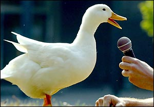

Get Inspired!
Learn Ruby
Arun Vydianathan | arun@ostryalabs.com | @arunsark
Arun Vydianathan | arun@ostryalabs.com | @arunsark
def what_is_ruby?
"A Programming Language"
end

Created by @dhh in July 2004
programming language
The number of transistors that can be placed inexpensively on an IC doubles approximately every two year
I believe people want to express themselves when they program. They don’t want to fight with the language. Programming languages must feel natural to programmers. I tried to make people enjoy programming and concentrate on the fun and creative part of programming when they use Ruby.
A dynamic open source programming language with a focus on simplicity and productivity. It has an elegant syntax that is natural to read and easy to write.
class xyz {
public int compute(int n) {
if (n==1)
return 1;
else
return n * compute(n-1)
}
}
def compute(n)
(1..n).inject(:*)
end
class MathHelper {
public int doSum(int a, int b) {
return a+b;
}
public static void main(String[] args) {
MathHelper mh = MathHelper.new();
System.out.println(mh.doSum(1,2));
}
}
class MathHelper
def do_sum(a,b)
a+b
end
end
mh = MathHelper.new
puts mh.doSum(1,2)
No primitive data type like int, float, boolean etc.
10.times do |i|
puts i
end
class Point
def initialize(x,y)
@x, @y = x, y
end
end
class Point
@x = 10 # Wrong!
@y = 10 # Wrong!
def initialize(x,y)
@x, @y = x, y
end
end
class MyClass
@my_var = 1
def self.read
@my_var
end
def write
@my_var = 2
end
def read
@my_var
end
end
# somewhere in your_xml_lib
module XML
class Document
# ...
end
end
# somewhere in their_pdf_lib
module PDF
class Document
# ...
end
end
require "your_xml_lib"
require "their_pdf_lib"
pdf_document = PDF::Document.new
xml_document = XML::Document.new
module Greeter
def hello
"hi"
end
end
class SomeClass
include Greeter
end
SomeClass.new.hello #=> "hi"
class AnotherClass
extend Greeter
end
AnotherClass.hello #=> "hi"
module M
def my_method
'M#my_method()'
end
end
class C
include M
end
class D < C; end
D.new.my_method() # => "M#my_method()"
class MyClass attr_accessor :x end obj1, obj2 = MyClass.new, MyClass.new
If it walks like a Duck and quacks like a Duck, then it must be a duck
 |
 |
In Java Type of an Object is tied to its Class
class Student { ..... }
Student s = Student.new("Arun");
In Ruby there is no association between Type and Class of the Object
In Ruby we are concerned with what an Object can do than its class
def print_name(obj)
puts obj.name if obj.respond_to?(:name)
end
Animal a = Animal.new
Student s = Student.new("Arun")
print_name(a)
print_name(s)
class Duck def quack;'Quack!'; end; def swim;'Paddle paddle paddle...'; end; end class Goose def honk; 'Honk!'; end; def swim; 'Splash splash splash...'; end; end class DuckRecorder < MusicRecorder def quack; play; end; def play; 'Quack!'; end; end def make_it_quack(duck); duck.quack; end; puts make_it_quack(Duck.new) puts make_it_quack(DuckRecorder.new) def make_it_swim(duck); duck.swim; end; puts make_it_swim(Duck.new) puts make_it_swim(Goose.new)
| Name | Occupation |
|---|---|
| Luke Mahé | V.P. of Keepin’ It Real |
| Marcin Wichary | The Michael Bay of Doodles |
| Name | Occupation |
|---|---|
| Luke Mahé | V.P. of Keepin’ It Real |
| Marcin Wichary | The Michael Bay of Doodles |


<script type='text/javascript'>
// Say hello world until the user starts questioning
// the meaningfulness of their existence.
function helloWorld(world) {
for (var i = 42; --i >= 0;) {
alert('Hello ' + String(world));
}
}
</script>
<style>
p { color: pink }
b { color: blue }
u { color: 'umber' }
</style>
<script type='text/javascript'>
// Say hello world until the user starts questioning
// the meaningfulness of their existence.
function helloWorld(world) {
for (var i = 42; --i >= 0;) {
alert('Hello ' + String(world));
}
}
</script>
<style>
p { color: pink }
b { color: blue }
u { color: 'umber' }
</style>
The best way to predict the future is to invent it.
A distributed system is one in which the failure of a computer you didn’t even know existed can render your own computer unusable.